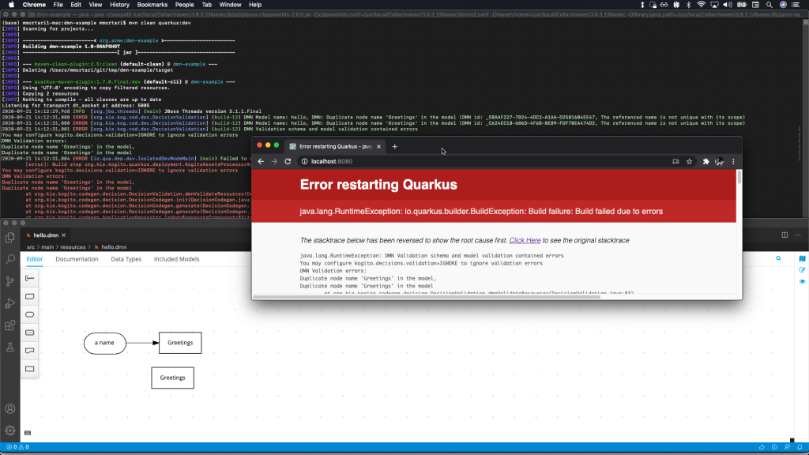

DMN Validation updates: Kogito and migration to Executable Model
In this article, we will describe some of the recent updates to the DMN Validation module (kie-dmn-validation) and how the migration to make use of the Executable Model enabled a number of use-cases, such as porting the functionality on the Kogito platform.
Introduction
The Drools DMN Engine provides static and semantic validation of DMN models:
- validation of DMN against specification XSDs
- static validation of DMN file
- e.g.: pre-compilation phase semantic validations (duplicate names, missing decision logic, etc.)
- fun-fact: static validation is performed with… Drools rules!
- compilation phase checks
- decision tables static analysis
- implements Method & Style checks
- semantic checks
- Hit Policy recommender
- Experimental features such as the MC/DC test case generator
The pre-compilation phase, where semantic validations are performed statically by introspecting deserialised DMN models, make use of Drools rules to ensure the conformance requirements from the DMN specification itself are respected in the DMN model provided by the user.
Migrating the DMN Validation to make use of the Executable Model
The migration required to fix some small corner cases in the executable model itself: I am extremely thankful to my colleagues Mario and especially Luca who supported me extensively in this migration, making it possible!
As any dogfooding program (the DMN validation module makes use of DRL rules to describe DMN specification semantics), this has been helpful also to highlight and overcome limitations early-on in the executable model itself when compared to the classic DRL mode of evaluation, to everyone’s benefit! :)
This migration also offers right off the bat several additional advantages:
- now
kie-dmn-validationuses the same default as per any kjar project Maven-built for Drools rules - several performance improvements;
for a basic example, executing the fullkie-dmn-validationmodule tests now is cut in half (was 40s, now ~18s) - it is an enabler: the
kie-dmn-validationhas been enabled also on Kogito, during code generation phase
DMN Validation on Kogito
By default now Kogito performs validation of DMN against specification XSDs and static validation of DMN file (pre-compilation phase semantic validations). Decision Table analysis on Kogito platform will be enabled in a future iteration.
As a basic example: if you inadvertently violated the DMN specification by authoring a DMN model with two identical names in the nodes, you will be presented with a relevant DMN Validation message:

You can always opt-out of DMN Validation by disabling it entirely by configuring with application.properties:
kogito.decisions.validation=DISABLED
or ignoring any error during the build by configuring instead:
kogito.decisions.validation=IGNORE
Next Steps
As we expand the DMN Validation features (and the Kogito platform itself) please try it out and let us know your feedback!
We believe the DMN Validation can better support you authoring DMN models more effectively.